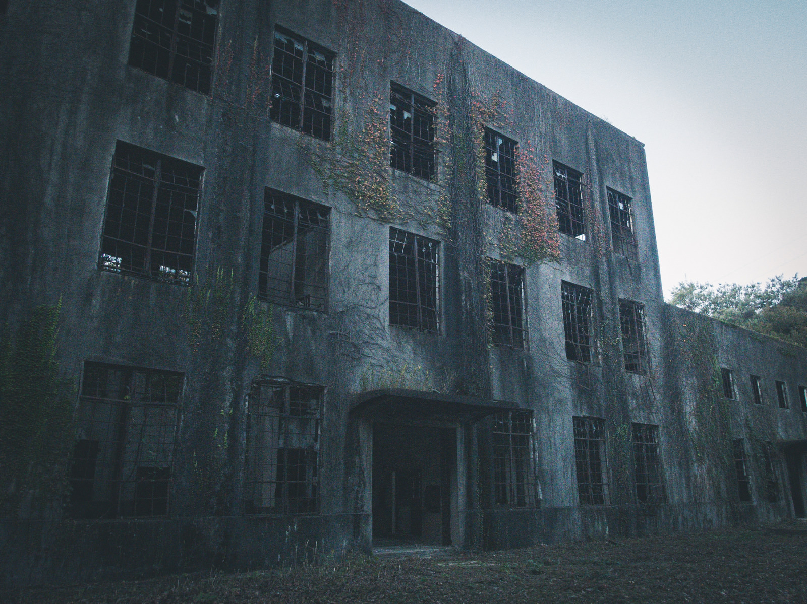

全国順位12位
共感者：128人
周りにいる幽霊の数：25人
全国順位12位
共感者：128人
周りにいる幽霊の数：25人
名城大学の12号館裏――そこは普段学生が通ることも少なく、植え込みと古びた倉庫があるだけの寂しい場所だ。
昼間は何の変哲もない裏道。でも、期末テストが近づくと、あの場所には近づくなと、先輩たちは口をそろえて言う。
理由はひとつ。「あそこには“答案回収者”が出る」と。
⸻
ある年の夏、教育学部の2年生・名城 花子は、翌日の試験に追われ、夜遅くまでレポートを書いていた。気分転換に、研究室の横の喫煙所へ向かおうと、うっかり12号館の裏手を通ってしまう。
時刻は夜11時23分。
蝉の鳴き声すら止んだ蒸し暑い夜。暗がりに足を踏み入れたとたん、花子は違和感を覚えた。
「……誰か、いる？」
倉庫の陰に、学生服姿の誰かが立っている。
ただ、その人物、顔が見えない。いや、見えないというより――存在していないのだ。
スッとこちらを向いた瞬間、花子の頭の中に、男の声が直接響く。
「答案、出してくれたよね？……忘れてないよね……？」
「えっ？」
彼は手に、びしょびしょに濡れた答案用紙を持っていた。よく見ると、花子の名前が書かれている。
そんなはずない。まだ提出していない課題だ。
「これ……私のじゃ……？」
「じゃあ、出してないんだ。忘れたんだね。忘れたやつは、俺と一緒に来てもらう。」
――その瞬間、足が動かなくなる。声も出せない。周囲がぐにゃりと歪み、見知らぬ試験教室に引きずり込まれそうになる。
そのとき。
「おーい！誰かいるのかー！？」
巡回中の警備員の懐中電灯が、裏道を照らした。
光に当たった途端、「それ」はまるで煙のように、答案用紙ごとふっと消えた。
⸻
翌朝、花子は学務課へ向かい、念のため未提出だったレポートを提出した。窓口の職員は何気なく言った。
「助かりましたね、これで“あの人”に連れていかれずに済みますね。」
「……え？」
「12号館の裏、“答案回収者”が現れる時期ですから……。」
⸻
〔あとがき〕
毎年、期末が近づくと名城のどこかで現れるという“答案回収者”。
**「未提出の課題やレポートを回収しに来る」**と言われ、見つかった学生は、学内のどこかにある“永遠の試験室”に連れていかれるとか…。
さて、あなたは今、出し忘れている課題……ありませんか？